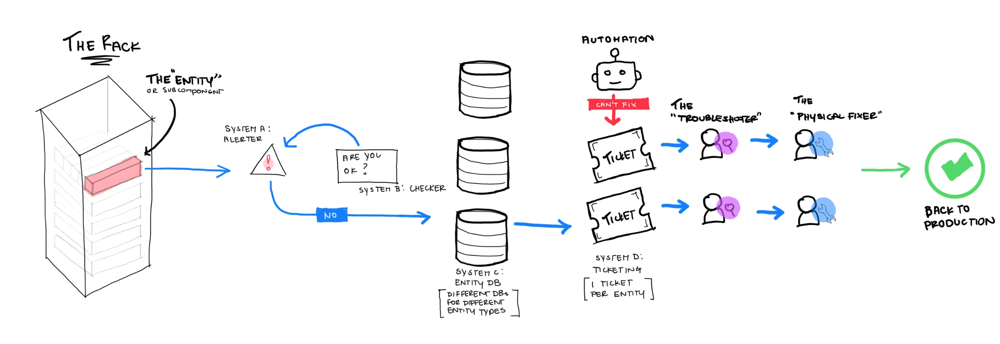

I led the design of the Meta Server Repair Console: a platform built to streamline knowledge sharing, strengthen collaboration across teams, and make global server repairs faster and more efficient.
01 Background
At Meta, we're constantly pushing the boundaries of generative AI and VR, and all of it depends on robust, reliable server infrastructure. As the company innovated faster, reliability and scale became mission-critical.
But frequent server failures created repetitive repair cycles. Engineers were caught in a continuous loop, re-solving the same problems and burning hours on work that had already been done. That waste is what I set out to fix.
02 Finding the problem
Before reaching for a solution, I needed to find the right problem to solve. So I went to where the work actually happened: the internal Facebook groups where technicians traded fixes, the engineers who owned the systems, and the technicians on the data center floor.
03 The problem
Engineers were constantly reinventing the wheel, re-solving the same issues because there was no accessible documentation of past problems and their solutions. With no structured way to capture and share knowledge, the same work got repeated and hard-won retention slipped out the door.
- Wasted time: hours spent re-diagnosing solved problems.
- Costly duplication: the same fix rebuilt across sites.
- Repeat failures: no signal when an issue kept recurring.
- Lost knowledge: fixes left with the people who knew them.
Create a platform that ensures seamless knowledge sharing across teams, eliminating silos, enabling collaboration, and designing solutions that are easy to scale globally.
04 The process
Over three months of discovery, I explored solutions for the core challenges across three connected systems: ticketing, FSA, and the repair console. Through 1:1 sessions I engaged each group of users, who were also key stakeholders, to gain deeper insights and refine the approach.

05 Challenge 1 · Action Plan Repository
Many sites had their own way of writing action plans. I established a single, consistent repository and self-service workflows so a proven fix is one search away, not one tribal-knowledge conversation away.
- Fewer errors in published action plans.
- Fewer undiagnosed tickets.

06 Challenge 2 · Ticketing Platform
Jira wasn't built for repair work. I replaced it with a system that understands the domain: tickets are captured and routed to the right person automatically, so the path from report to resolution gets shorter.
- Tickets routed to the right team the first time.
- Faster time-to-resolution.
07 Challenge 3 · Global Monitoring
Centralizing data across every issue puts the numbers in one place, so recurring patterns surface earlier and a one-off failure can be caught before it becomes a fleet-wide one.
- Recurring patterns surfaced earlier.
- Fewer one-off failures escalating across the fleet.
08 Lessons
- Adapt, adapt, adapt. Constant change taught me the value of quick thinking and flexibility. Working across three shifting systems, the designs that survived were the ones built to bend.
- Understand stakeholders, together. Expectations are clearest when you set them collaboratively, not by guessing, especially when your users are also your stakeholders.
- Remember to pause. Rapid iteration makes it easy to lose perspective. Stepping back to ask which details mattered now and which could wait kept the work honest.